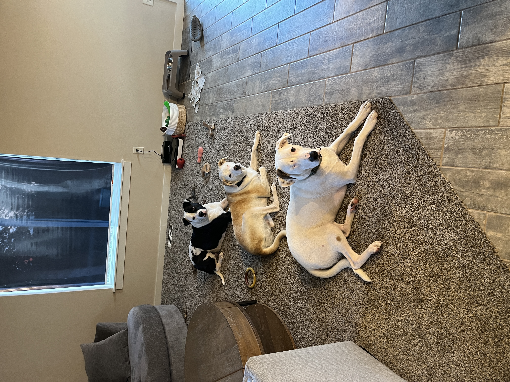

01:00
MATH 427: Statistical Machine Learning
Welcome!
Meet Prof. Friedlander!
- Education and career journey
- Grew up outside New York City
- BS in Math & Statistics from Rice University (Houston, TX)
- Business Analyst at Capital One (Plano, TX)
- MS and PhD in Statistics & Operations Research from UNC-Chapel Hill
- Postdoc in Population Genetics at University of Chicago
- Assistant Professor of Math at St. Norbert College (Green Bay, WI)
- Work focuses on statistics education, queuing theory, and population genetics
- Big sports fan: NY Knicks, Giants, Rangers, Yankees, UNC Tarheels
- Dad of three cute dogs: Allie, Miriam, Tony
Meet Prof. Friedlander!

Tell me about yourself + GitHub
Create a GitHub account. You may want to use this to show-off work to future employers so I recommend using something professional (like your name) as your user name.
Send me an email with answers to the following questions:
- What is the GitHub username you just created?
- What would you like me to call you?
- Why are you taking this class?
- What are your career goals?
- Is there anything else you would like me to know about you? E.g. athlete, preferred pronouns, accommodations, etc…
- Please recommend at least one and up to infinity songs for the class playlist.
Machine Learning
What is Machine Learning?
- Machine Learning is the study of tools/techniques for extracting information and making predictions from complex datasets
- The name machine learning was coined in 1959 by Arthur Samuel
- “Field of study that gives computers the ability to learn without being explicitly programmed”
What is Machine Learning?
Tom M. Mitchell (1998):
A computer program is said to learn from experience E with respect to some class of tasks T and performance measure P if its performance at tasks in T, as measured by P, improves with experience E.
What is Machine Learning?

Question!!!
Suppose your email program watches which emails you do or do not mark as spam, and based on that learns how to better filter spam. According to Tom Mitchell’s definition, which of the following is the task T, experience E, and performance measure P in this setting?
- P The number (or fraction) of emails correctly classified as spam/ham (not spam)
- T Classifying emails as spam or ham
- E Watching you label emails as spam or ham
Statistical Learning vs Machine Learning vs Data Science
- Machine learning arose as a sub-field of Artificial Intelligence which is a sub-fields of Computer Science
- Statistical learning arose as a sub-field of Statistics
- There is much overlap, a great deal of “cross-fertilization”
- “Data Science” - Reflects the fact that both statistical and machine learning are about data
- “Machine Learning” or “Data Science” are “fancier” terms
Statistics vs Machine Learning
- Statistics: more concerned with answering why and how things work, making inferences
- Machine/Statistical learning: more concerned with making predictions
Terminology/Notation
Ames Housing dataset - Contains data on 881 houses in Ames, IA. We are interested in predicting sale price.
The first ten observations are shown below.
| Sale_Price | Gr_Liv_Area | Garage_Type | Garage_Cars | Garage_Area | Street | Utilities | Pool_Area | Neighborhood |
|---|---|---|---|---|---|---|---|---|
| 244000 | 2110 | Attchd | 2 | 522 | Pave | AllPub | 0 | North_Ames |
| 213500 | 1338 | Attchd | 2 | 582 | Pave | AllPub | 0 | Stone_Brook |
| 185000 | 1187 | Attchd | 2 | 420 | Pave | AllPub | 0 | Gilbert |
| 394432 | 1856 | Attchd | 3 | 834 | Pave | AllPub | 0 | Stone_Brook |
| 190000 | 1844 | Attchd | 2 | 546 | Pave | AllPub | 0 | Northwest_Ames |
| 149000 | NA | Attchd | 2 | 480 | Pave | AllPub | 0 | North_Ames |
| 149900 | NA | Attchd | 2 | 500 | Pave | AllPub | 0 | North_Ames |
| 127500 | 1069 | Attchd | 2 | 440 | Pave | AllPub | 0 | Northpark_Villa |
| 395192 | 1940 | Attchd | 3 | 606 | Pave | AllPub | 0 | Northridge_Heights |
| 290941 | 1544 | Attchd | 3 | 868 | Pave | AllPub | 0 | Northridge_Heights |
Terminologies/Notations
Default dataset - Contains credit card default data on 10,000 individuals. We are interested in predicting whether somebody will default or not.
Ten observations are shown below.
| default | student | balance | income |
|---|---|---|---|
| No | No | 939.0985 | 45519.02 |
| No | Yes | 397.5425 | 22710.87 |
| Yes | No | 1511.6110 | 53506.94 |
| No | No | 301.3194 | 51539.95 |
| No | No | 878.4461 | 29561.78 |
| Yes | No | 1673.4863 | 49310.33 |
| No | No | 310.1302 | 37697.22 |
| No | No | 1272.0539 | 44895.59 |
| No | No | 887.2014 | 41641.45 |
| No | No | 230.8689 | 32798.78 |
Terminologies/Notations
- Response/Target/Outcome - variable we are interested in predicting, denoted as \(Y\)
- Features/Inputs/Predictors - variables used to predict the response, denoted as \(X\)
- Feature Matrix - all features taken together, denoted as \(\mathbf{X}\)
- Number of data points/observations denoted as \(n\)
- Number of features/inputs/predictors denotes as \(p\)
- Missing entries in R are denoted as
NA
Question!!!
For the Ames Housing and Default datasets:
- What are the corresponding values of \(n\) and \(p\)?
- What will be the dimension of the corresponding response vector \(Y\)?
- What is the value of the 3rd feature for the 2nd observation?
- What are the corresponding values of \(n\) and \(p\)?
- Ames: \(n = 881\) and \(p = 9\)
- Default: \(n = 10000\) and \(p = 4\)
- What will be the dimension of the corresponding response vector \(Y\)?
- Ames: \(881\times 1\)
- Default: \(10000\times 1\)
- What is the value of the 3rd feature for the 2nd observation?
- Ames:
Attchd - Default:
397.5425
- Ames:
Question!!!
Suppose you have information about 867 cancer patients on their age, tumor size, clump thickness of the tumor, uniformity of cell size, and whether the tumor is malignant or benign. Based on these data, you are interested in building a model to predict the type of tumor (malignant or benign) for future cancer patients.
- What are the values of \(n\) and \(p\) in this dataset? \(n = 867, p = 5\)
- What are the inputs/features?
Supervised vs Unsupervised Learning

Supervised Learning
- We have access to labeled data
- Objective: learn overall pattern of relationship between the inputs (\(\mathbf{X}\)) and response (\(Y\)) in order to
- Investigate the relationship between inputs and response
- Predict for potential unseen test cases
- Assess the quality of predictions
Types of Supervised Learning
Supervised Learning problems can be categorized into:
- Regression problems (response is quantitative, continuous)
- Classification problems (response is qualitative, categorical)
Unsupervised Learning
- No response/outcome variable, just \(\mathbf{X}\)
- Understand structure within data
- find similar groups of observations based on features (clustering)
- find a smaller subset of features with the most variation (dimensionality reduction)
- No gold-standard
- Easier to collect unlabeled data
- Useful pre-processing step for supervised learning
Unsupervised Learning
US Arrests dataset - Data on arrests for 50 US states.
The first ten observations are shown below.
| Murder | Assault | UrbanPop | Rape | |
|---|---|---|---|---|
| Alabama | 13.2 | 236 | 58 | 21.2 |
| Alaska | 10.0 | 263 | 48 | 44.5 |
| Arizona | 8.1 | 294 | 80 | 31.0 |
| Arkansas | 8.8 | 190 | 50 | 19.5 |
| California | 9.0 | 276 | 91 | 40.6 |
| Colorado | 7.9 | 204 | 78 | 38.7 |
| Connecticut | 3.3 | 110 | 77 | 11.1 |
| Delaware | 5.9 | 238 | 72 | 15.8 |
| Florida | 15.4 | 335 | 80 | 31.9 |
| Georgia | 17.4 | 211 | 60 | 25.8 |
Question!!!
For each of the following, identify whether the problem belongs to the supervised or unsupervised learning paradigm
- Examine the statistics of two football teams, and predict which team will win tomorrow’s match (given historical data of teams’ wins/losses to learn from) supervised
- Given genetic (DNA) data from a person, predict the probability of the person developing diabetes over the next 10 years supervised
- Take a collection of 1000 essays written on the US economy, and find a way to automatically group these essays into a small number of groups of essays that are somehow “similar” or “related” unsupervised
- Examine data on the income and years of education of adults in a neighborhood and build a model to predict the income from years of education supervised
MAT 427
Course FAQ
Q - What background is assumed for the course?
A - Familiarity with concepts from statistical inference, linear regression, and logistic regression. A solid grounding in R, including the tidyverse and ggplot.
Course FAQ
Q - Will we be doing computing?
A - Yes. We will use the computing language R for analysis, Quarto for writing up results, and GitHub for version control and collaboration
Course FAQ
Q - Will we learn the mathematical theory?
A - Yes and No. The course is primarily focused on application; however, we will discuss some of the mathematics occasionally.
Course FAQ
Q - What distinguishes this from a 300-level course?
A - I expect a high level of independence from you. You should not be relying on me to teach you every small detail from this course. For example, if you tell you about an R function, I expect that you will be able to figure out how to use it yourself.
Course FAQ
Q - Is there anything else I should know?
A - Machine learning is a RAPIDLY evolving field. If you want to be successful in this field going forward, you will need to be able to learn things for yourself and SELF-ASSESS whether you know them. There are portions of this course that I have intentionally designed to not give you enough information to solve on your own.
Course learning objectives
By the end of the semester, you will be able to…
tackle predictive modeling problems arising from real data.
use R to fit and evaluate machine learning models.
assess whether a proposed model is appropriate and describe its limitations.
use Quarto to write reproducible reports and GitHub for version control and collaboration.
effectively communicate results results through writing and oral presentations.
Course overview
Course toolkit
- Course website
- Central hub for the course!
- Tour of the website
- Canvas
- Gradebook
- Announcements
- GitHub
- Distribute assignments
- Platform for version control and collaboration
Computing toolkit

All analyses using R, a statistical programming language
Write reproducible reports in Quarto
Access RStudio through your personal computer (preferred) or the RStudio Server (email me ASAP if you are doing this)

Access assignments
Facilitates version control and collaboration
All work in MAT 427 course classroom
Activities + assessments
Prepare, Participate, Practice, Perform
Prepare: Introduce new content and prepare for lectures by completing the readings (and sometimes watching the videos)
Participate: Attend and actively participate in lectures, office hours, team meetings
Practice: Practice applying statistical concepts and computing with team-based homework graded for completion
Perform: Put together what you’ve learned to analyze real-world data
Two Job Applications/Portfolios (individual)
Two Job Interviews (individual)
One Hack-a-thon/Presentation (individual-ish)
One Project & Presentation (team)
Grading
| Category | Percentage |
|---|---|
| Homework | 10% |
| Job Application 1 | 15% |
| Job Application 2 | 15% |
| Job Interview 1 | 15% |
| Job Interview 2 | 15% |
| Hack-a-thon & Presentation | 15% |
| Final Project | 15% |
See the syllabus for details on how the final letter grade will be calculated.
Support
- Attend office hours
- Prof. Friedlander office hours are TBD
- Dedicated homework help session
- Location and hours TBD
- Use email for questions regarding personal matters and/or grades
- See the Course Support page for more details
Course policies
Late Homework
- One week late (no grade penalty)
- After I start grading (no feedback)
- Why should I care about feedback?
- It’s how you learn… duh
- You will be repurposing your homeworks for your job applications
School-Sponsored Events
- Excused absences for event? Email me at least a week in advance
- Sick or injured? Email me as soon as it is safe to do so.
- Don’t get me sick…
- Failure to adhere to this policy gets you a 35% point reduction
Academic integrity
The College of Idaho maintains that academic honesty and integrity are essential values in the educational process. Operating under an Honor Code philosophy, the College expects conduct rooted in honesty, integrity, and understanding, allowing members of a diverse student body to live together and interact and learn from one another in ways that protect both personal freedom and community standards. Violations of academic honesty are addressed primarily by the instructor and may be referred to the Student Judicial Board.
By participating in this course, you are agreeing that all your work and conduct will be in accordance with the College of Idaho Honor Code.
Collaboration & sharing code
- I have policies!
Use of artificial intelligence (AI)
- You should treat AI tools, such as ChatGPT, the same as other online resources.
- There are two guiding principles that govern how you can use AI in this course:1
- (1) Cognitive dimension: Working with AI should not reduce your ability to think clearly. We will practice using AI to facilitate—rather than hinder—learning.
- (2) Ethical dimension: Students using AI should be transparent about their use and make sure it aligns with academic integrity.
Use of artificial intelligence (AI)
Understand everything you write down
Tell me where you got it from
Don’t lie about it
Important
In general, you may use AI as a resource as you complete assignments but not to answer the exercises for you. You are ultimately responsible for the work you turn in; it should reflect your understanding of the course content. Any code or content from your homework is eligible for inclusion during your job interview.
In class agreements
If we discuss/agree to something in class or office hours which requires action from me (e.g. “you may turn in your homework late due to a sporting event”), you MUST send me a follow-up message. If you don’t, I will almost certainly forget, and our agreement will be considered null and void.
Having a successful semester in MAT 427
Five tips for success
Complete all the preparation work (readings and videos) before class.
Ask questions, come to office hours and help session.
Do the homework; get started on homework early when possible.
Don’t procrastinate and don’t let a week pass by with lingering questions.
Stay up-to-date on announcements on Canvas and sent via email.
Emails for help
If you email me about an error please include a screenshot of the error and the code causing the error.
Questions?
Raise your hand or email me.
Footnotes
These guiding principles are based on Course Policies related to ChatGPT and other AI Tools developed by Joel Gladd, Ph.D.↩︎↩︎